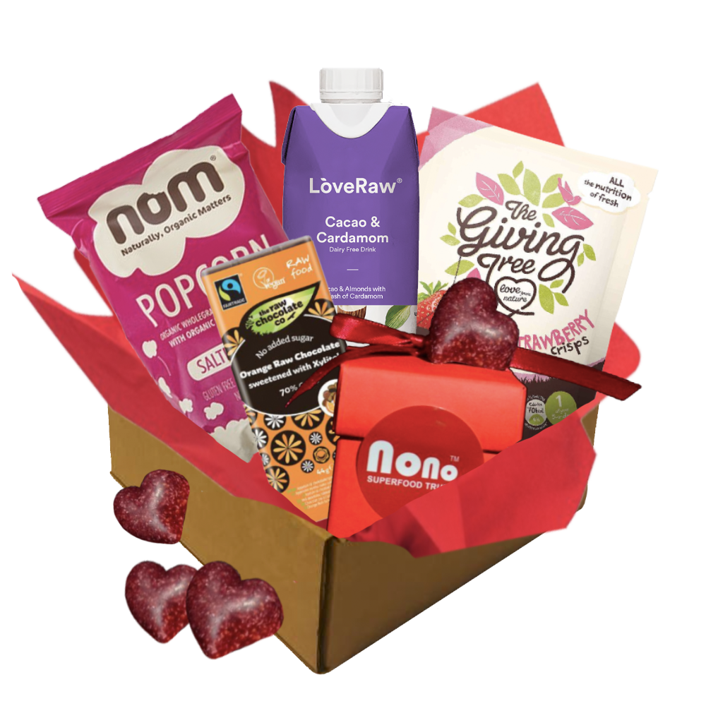
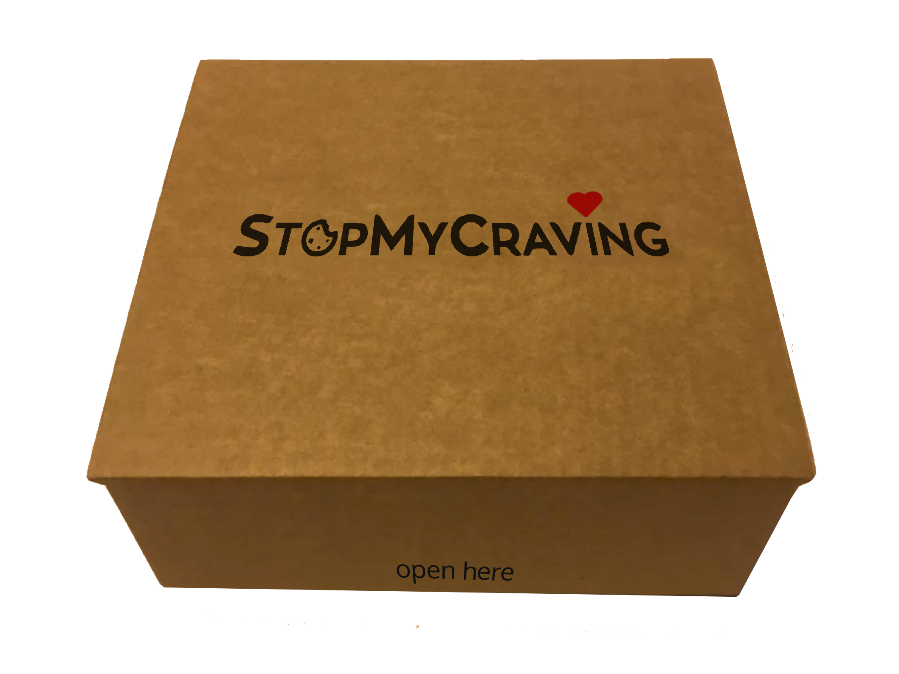

StopMyCraving: Product & Packaging.
Client
StopMyCraving is a food tech company that works with independent producers. It was judged a UK Top 20 startup last year, with a place on Europe's Number 1 accelerator programme this year. Their online store enables users to search for nutritious snacks and drinks according to their lifestyle goals, dietary needs, and cravings.
Brief
I worked closely with the developer, CEO, and nutritionist to develop user-centered products and packaging.
Deliverables
Based on extensive research into healthy snacking trends, I co-designed a range of seven "snack boxes" that correspond to our target users. See the Valentine's Box below...
Process
I held focus groups to verify hypotheses about who our target users are and what they need or want. The team then adopted a "beachhead" marketing strategy, i.e. winning over specific consumer groups in order to break into the mainstream.
The contents of the boxes are selected from our range of snacks and drinks with the target user in mind, e.g. the Yummy Mummy box contains all organic products.
In terms of packaging, I designed a solution that uses a neat and robust, recyclable box that can withstand international shipping and is cost effective. The logo and branding is added with custom-made stamps to retain a rustic yet bold look. The final result is exciting to receive and to open.
Outcomes
With its new product range, StopMyCraving has been accepted onto Europe's no.1 accelerator programme in Europe, Accelerace. The new products are now retailing on Danish department store, Moodings.
I'm using: Skype (user interviews), pencil and paper for rapid prototyping, Sketch app, Sketch up (3D modelling), Photoshop, Illustrator (packaging dielines), inVision, Zeplin.